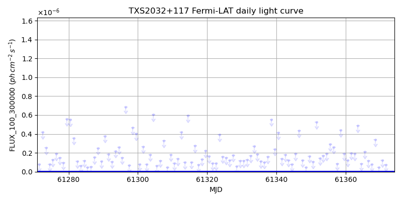
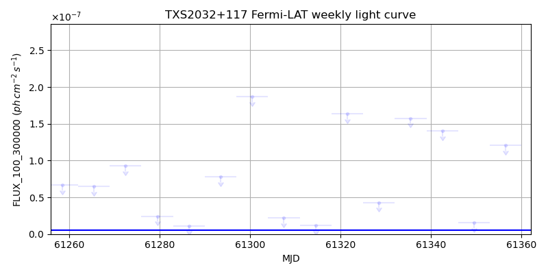
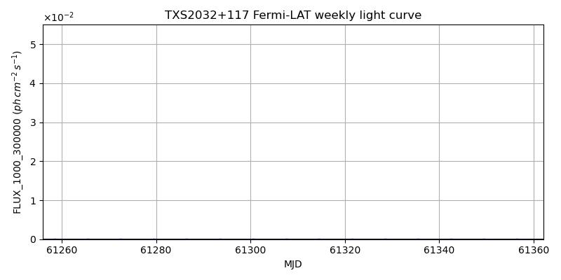

LAT Lightcurve site: https://fermi.gsfc.nasa.gov/ssc/data/access/lat/msl_lc/source/TXS_2032p117
NED: Query
Time of last update of this page: UT: 2026-11-20 16:28 (MJD: 61364.686)
| Property | Value |
|---|---|
| R.A. | 20:34:37.20 |
| Dec. | 11:54:32.4 |
| z | 0.607 |
| 3FGL SpectrumType | PowerLaw |
| 3FGL PL Index | 2.47 |
| 3FGL Flux_100_300000 | 1.45e-08 1 / (s cm2) |
| 3FGL Flux_1000_300000 | 4.86e-10 1 / (s cm2) |
| 3FGL Flux >200 GeV | 1.96e-13 1 / (s cm2) |
| 3FGL Extrap. Crab >200 GeV | 0.00 |
| 3FGL Flux After EBL Absorption >200GeV | 1.94e-14 1 / (s cm2) |
| 3FGL EBL Crab Fraction >200GeV | 0.00 |

| MJD | dMJD | Flux | dFlux | Frac3FGL | FracCrab>200GeV | EBLFracCrab>200GeV |
|---|---|---|---|---|---|---|
| 61359.50 | 0.50 | 1.88e-07 | 0.00e+00 | 0.00 | 0.00 | 0.00 |
| 61360.50 | 0.50 | 1.23e-07 | 0.00e+00 | 0.00 | 0.00 | 0.00 |
| 61361.50 | 0.50 | 1.97e-07 | 0.00e+00 | 0.00 | 0.00 | 0.00 |
| 61362.50 | 0.50 | 1.88e-07 | 0.00e+00 | 0.00 | 0.00 | 0.00 |
| 61363.50 | 0.50 | 4.86e-07 | 0.00e+00 | 0.00 | 0.00 | 0.00 |

| MJD | dMJD | Flux | dFlux | Frac3FGL | FracCrab>200GeV | EBLFracCrab>200GeV |
|---|---|---|---|---|---|---|
| 61328.50 | 3.50 | 4.29e-08 | 0.00e+00 | 0.00 | 0.00 | 0.00 |
| 61335.50 | 3.50 | 1.57e-07 | 0.00e+00 | 0.00 | 0.00 | 0.00 |
| 61342.50 | 3.50 | 1.40e-07 | 0.00e+00 | 0.00 | 0.00 | 0.00 |
| 61349.50 | 3.50 | 1.55e-08 | 0.00e+00 | 0.00 | 0.00 | 0.00 |
| 61356.50 | 3.50 | 1.21e-07 | 0.00e+00 | 0.00 | 0.00 | 0.00 |
| MJD | dMJD | Flux | dFlux | Frac3FGL | FracCrab>200GeV | EBLFracCrab>200GeV |
|---|---|---|---|---|---|---|
| 61359.50 | 0.50 | 1.87e-08 | 0.00e+00 | 0.00 | 0.00 | 0.00 |
| 61360.50 | 0.50 | 1.70e-08 | 0.00e+00 | 0.00 | 0.00 | 0.00 |
| 61361.50 | 0.50 | 4.20e-08 | 0.00e+00 | 0.00 | 0.00 | 0.00 |
| 61362.50 | 0.50 | 4.28e-08 | 0.00e+00 | 0.00 | 0.00 | 0.00 |
| 61363.50 | 0.50 | 2.12e-08 | 0.00e+00 | 0.00 | 0.00 | 0.00 |

| MJD | dMJD | Flux | dFlux | Frac3FGL | FracCrab>200GeV | EBLFracCrab>200GeV |
|---|---|---|---|---|---|---|
| 61328.50 | 3.50 | 7.97e-09 | 0.00e+00 | 0.00 | 0.00 | 0.00 |
| 61335.50 | 3.50 | 2.67e-09 | 0.00e+00 | 0.00 | 0.00 | 0.00 |
| 61342.50 | 3.50 | 3.15e-09 | 0.00e+00 | 0.00 | 0.00 | 0.00 |
| 61349.50 | 3.50 | 2.44e-09 | 0.00e+00 | 0.00 | 0.00 | 0.00 |
| 61356.50 | 3.50 | 2.85e-09 | 0.00e+00 | 0.00 | 0.00 | 0.00 |
--------------------------------------------------------- Using user-supplied coords: 20:34:37.20 11:54:32.4 2000 --------------------------------------------------------- FLWO UT night of: 2026-11-21 Local Sid. @ Midnight: 03:37 Sunset (-15.0) (local, UT): 18:33 01:33 Sunrise (-15.0) (local, UT): 05:47 12:47 Moonrise (local, UT): Moonset (local, UT): 03:40 10:40 Moon phase: 0.85 --------------------------------------------------------- AzTime LSID UT Obj_el Obj_az Mn_el Mn_az Sep. --------------------------------------------------------- 18:33 22:09 01:33 60.9 232.7 47.9 117.4 59.5 19:03 22:39 02:03 55.5 242.2 53.3 125.0 59.6 19:33 23:09 02:33 49.7 249.6 58.2 134.7 59.7 20:03 23:39 03:03 43.6 255.6 62.3 146.9 59.9 20:33 00:09 03:33 37.3 260.6 65.1 162.1 60.0 21:03 00:39 04:03 31.0 265.1 66.3 179.7 60.1 21:33 01:09 04:33 24.6 269.2 65.4 197.5 60.2 22:03 01:39 05:03 18.2 273.1 62.9 213.2 60.4 22:33 02:09 05:33 11.8 277.0 59.0 225.9 60.5 23:03 02:39 06:03 5.6 280.8 54.2 235.9 60.6 23:33 03:09 06:33 -0.2 284.7 48.9 243.9 60.8 00:03 03:39 07:03 -6.9 288.7 43.2 250.4 60.9 00:33 04:10 07:33 -12.9 293.1 37.3 255.9 61.1 01:03 04:40 08:03 -18.7 297.8 31.2 260.7 61.3 01:33 05:10 08:33 -24.2 303.0 25.1 265.1 61.5 02:03 05:40 09:03 -29.4 308.9 19.0 269.2 61.7 02:33 06:10 09:33 -34.1 315.5 12.9 273.0 61.9 03:03 06:40 10:03 -38.3 323.0 6.8 276.9 62.1 03:33 07:10 10:33 -41.8 331.5 1.0 280.7 62.4 04:03 07:40 11:03 -44.4 340.9 -4.9 284.7 62.6 04:33 08:10 11:33 -45.9 351.1 -11.1 288.8 62.9 05:03 08:40 12:03 -46.3 1.7 -16.8 293.2 63.2 05:33 09:10 12:33 -45.5 12.3 -22.3 298.1 63.5 05:47 09:25 12:47 -44.7 17.1 -24.8 300.5 63.6 --------------------------------------------------------- Dark hours >55 deg.: 0.00